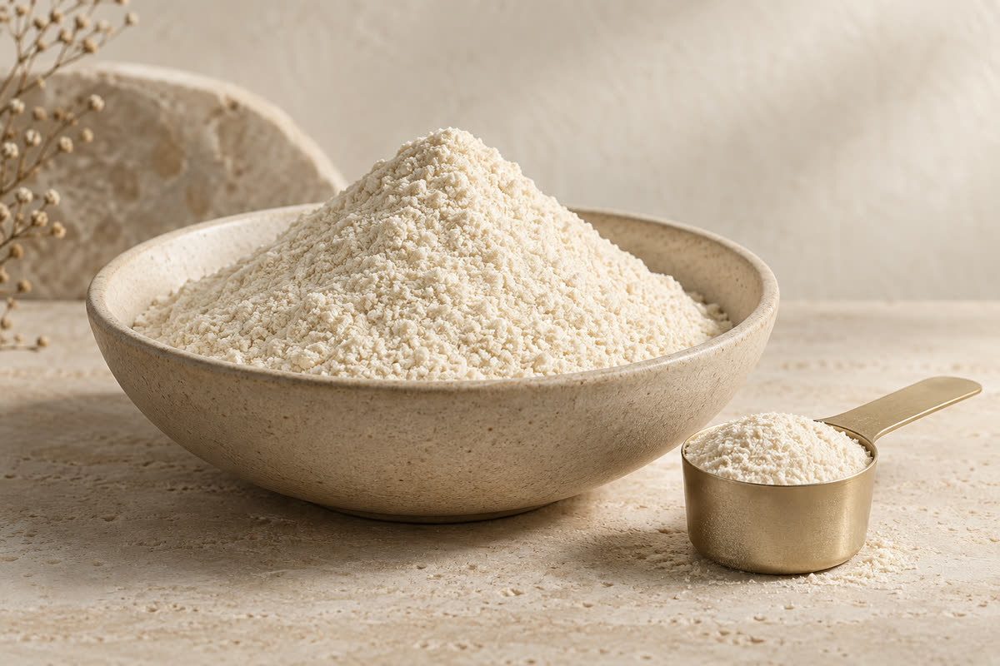

直接食用方向
先討論每次食用的份量、入口口感與風味，並評估與配方的搭配。

FORMAT OVERVIEW
粉末食品的開發，從「怎麼吃」開始。直接食用與沖泡飲用的體驗不同，原料、口感及單份用量需要一起評估。
先討論每次食用的份量、入口口感與風味，並評估與配方的搭配。
先確認以水、牛奶或其他飲品沖調的情境，再討論風味、用量與沖泡方式。
DEVELOPMENT CONSIDERATIONS
實際可行配方、規格、起訂量與交期，需依原料、包材及專案需求確認。
START A PROJECT
提供產品方向、目標客群與預計數量，與顧問一起整理下一步的配方與打樣需求。
討論這個劑型